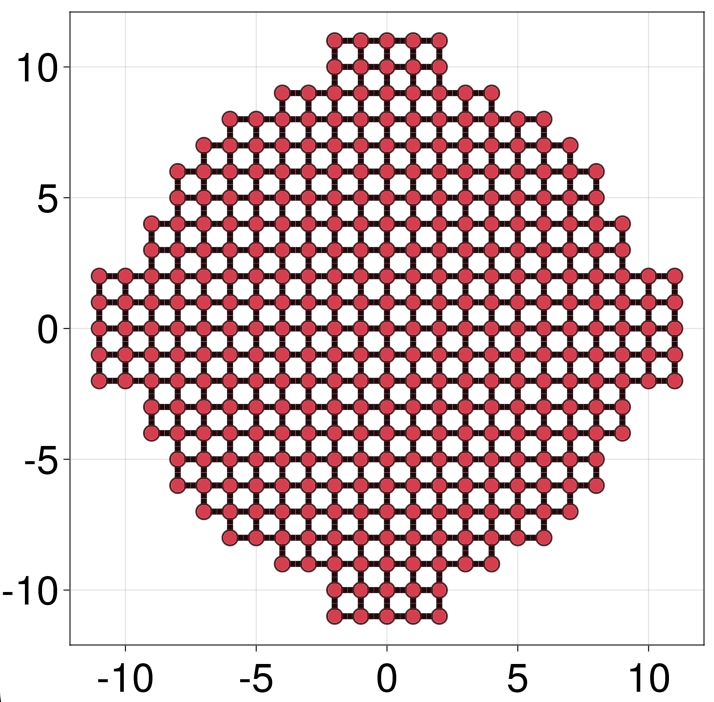

GreenFunctions
Up to now we have seen how to define Lattices, Models, Hamiltonians and Bandstructures. Most problems require the computation of different physical observables for these objects, e.g. the local density of states or various transport coefficients. We reduce this general problem to the computation of the retarded Green function
$G^r_{ij}(\omega) = \langle i|(\omega-H-\Sigma(\omega))^{-1}|j\rangle$
where i, j are orbitals, H is the (possibly infinite) Hamiltonian matrix, and Σ(ω) is the self-energy coming from any coupling to other systems (typically described by their own AbstractHamiltonian).
We split the problem of computing Gʳᵢⱼ(ω) of a given h::AbstractHamiltonian into four steps:
- Attach self-energies to
husing the commandoh = attach(h, args...). This produces a new objectoh::OpenHamiltonianwith a number ofContacts, numbered1toN - Use
g = greenfunction(oh, solver)to build ag::GreenFunctionrepresentingGʳ(at arbitraryωandi,j), whereoh::OpenHamiltonianandsolver::GreenSolver(seeGreenSolversbelow for available solvers) - Evaluate
gω = g(ω; params...)at fixed energyωand model parameters, which produces agω::GreenSolution - Slice
gω[sᵢ, sⱼ]orgω[sᵢ] == gω[sᵢ, sᵢ]to obtainGʳᵢⱼ(ω)as a flat matrix, wheresᵢ, sⱼare either site selectors over sites spanning orbitalsi,j, or integers denoting contacts,1toN.
The two last steps can be interchanged, by first obtaining a gs::GreenSlice with gs = g[sᵢ, sⱼ] and then obtaining the Gʳᵢⱼ(ω) matrix with gs(ω; params...).
A simple example
Here is a simple example of the Green function of a 1D lead with two sites per unit cell, a boundary at cell = 0, and with no attached self-energies for simplicity
julia> hlead = LP.square() |> supercell((1,0), region = r -> 0 <= r[2] < 2) |> hopping(1);
julia> glead = greenfunction(hlead, GreenSolvers.Schur(boundary = 0))
GreenFunction{Float64,2,1}: Green function of a Hamiltonian{Float64,2,1}
Solver : AppliedSchurGreenSolver
Contacts : 0
Contact solvers : ()
Contact sizes : ()
Hamiltonian{Float64,2,1}: Hamiltonian on a 1D Lattice in 2D space
Bloch harmonics : 3
Harmonic size : 2 × 2
Orbitals : [1]
Element type : scalar (ComplexF64)
Onsites : 0
Hoppings : 6
Coordination : 3.0
julia> gω = glead(0.2) # we first fix energy to ω = 0.2
GreenSolution{Float64,2,1}: Green function at arbitrary positions, but at a fixed energy
julia> gω[cells = 1:2] # we now ask for the Green function between orbitals in the first two unit cells to the righht of the boundary
4×4 Matrix{ComplexF64}:
0.1-0.858258im -0.5-0.0582576im -0.48-0.113394im -0.2+0.846606im
-0.5-0.0582576im 0.1-0.858258im -0.2+0.846606im -0.48-0.113394im
-0.48-0.113394im -0.2+0.846606im 0.104-0.869285im 0.44+0.282715im
-0.2+0.846606im -0.48-0.113394im 0.44+0.282715im 0.104-0.869285imNote that the result is a 4 x 4 matrix, because there are 2 orbitals (one per site) in each of the two unit cells. Note also that the Schur GreenSolver used here allows us to compute the Green function between distant cells with little overhead
julia> @time gω[cells = 1:2];
0.000067 seconds (70 allocations: 6.844 KiB)
julia> @time gω[cells = (SA[10], SA[100000])];
0.000098 seconds (229 allocations: 26.891 KiB)GreenSolvers
The currently implemented GreenSolvers (abbreviated as GS) are the following
GS.SparseLU()For bounded (
L=0) AbstractHamiltonians. Default forL=0.Uses a sparse
LUfactorization to compute the⟨i|(ω - H - Σ(ω))⁻¹|j⟩inverse.
GS.KPM(order = 100, bandrange = missing, kernel = I)For bounded (
L=0) Hamiltonians, and restricted to sites belonging to contacts (see the section on Contacts).It precomputes the Chebyshev momenta
GS.Schur(boundary = Inf)For 1D (
L=1) AbstractHamiltonians with only nearest-cell coupling. Default forL=1.Uses a deflating Generalized Schur (QZ) factorization of the generalized eigenvalue problem to compute the unit-cell self energies. The Dyson equation then yields the Green function between arbitrary unit cells, which is further dressed using a T-matrix approach if the lead has any attached self-energy.
In the near future we will also have GS.Bands as a general solver in lattice dimensions L ∈ [1,3].
Attaching Contacts
A self energy Σ(ω) acting of a finite set of sites of h (i.e. on a LatticeSlice of lat = lattice(h)) can be incorporated using the attach command. This defines a new Contact in h. The general syntax is oh = attach(h, args...; sites...), where the sites directives define the Contact LatticeSlice (lat[siteselector(; sites...)]), and args can take a number of forms.
The supported attach forms are the following
Generic self-energy
attach(h, gs::GreenSlice, coupling::AbstractModel; sites...)This is the generic form of
attach, which couples some sitesiof ag::Greenfunction(defined by the slicegs = g[i]), tositesofhusing acouplingmodel. This results in a self-energyΣ(ω) = V´⋅gs(ω)⋅Vonhsites, whereVandV´are couplings matrices given bycoupling.
Dummy self-energy
attach(h, nothing; sites...)This form merely defines a new contact on the specified
sites, but adds no actual self-energy to it. It is meant as a way to refer to some sites of interest using theg[i::Integer]slicing syntax forGreenFunctions, whereiis the contact index.
Model self-energy
attach(h, model::AbstractModel; sites...)This form defines a self-energy
Σᵢⱼ(ω)in terms ofmodel, which must be composed purely of parametric terms (@onsiteand@hopping) that haveωas first argument, as in e.g.@onsite((ω, r) -> Σᵢᵢ(ω, r))or@hopping((ω, r, dr) -> Σᵢⱼ(ω, r, dr)). This is a modellistic approach, wherein the self-energy is not computed from the properties of anotherAbstractHamiltonian, but rather has an arbitrary form defined by the user.
Matched lead self-energy
attach(h, glead::GreenFunction; reverse = false, transform = identity, sites...)Here
gleadis a GreenFunction of a 1D lead, possibly with a boundary.With this syntax
sitesmust select a number of sites inhwhose position match (after applyingtransformto them and modulo an arbitrary displacement) the sites in the unit cell ofglead. Then, the coupling between these and the first unit cell ofgleadon the positive side of the boundary will be the same as betweengleadunitcells, i.e.V = hlead[(1,)], wherehlead = hamiltonian(glead).If
reverse == true, the lead is reversed before being attached, so that h is coupled throughV = hlead[(-1,)]to the first unitcell on the negative side of the boundary. If there is no boundary, thecell = 0unitcell of thegleadis used.
Generic lead self-energy
attach(h, glead::GreenFunction, model::AbstractModel; reverse = false, transform = identity, sites...)The same as above, but without any restriction on
sites. The coupling between these and the first unit cell ofglead(transformed bytransform) is constructed usingmodel::TightbindingModel. The "first unit cell" is defined as above.
A more advanced example
Let us define the classical example of a multiterminal mesoscopic junction. We choose a square lattice, and a circular central region of radius 10, with four leads of width 5 coupled to it at right angles.
We first define a single lead Greenfunction and the central Hamiltonian
julia> glead = LP.square() |> hopping(1) |> supercell((1, 0), region = r -> abs(r[2]) <= 5/2) |> greenfunction(GS.Schur(boundary = 0));
julia> hcentral = LP.square() |> hopping(1) |> supercell(region = RP.circle(10) | RP.rectangle((22, 5)) | RP.rectangle((5, 22)))The two rectangles overlayed on the circle above create the stubs where the leads will be attached:
We now attach glead four times using the Matched lead syntax
julia> Rot = r -> SA[0 -1; 1 0] * r; # 90º rotation function
julia> gcentral = hcentral |>
attach(glead, region = r -> r[1] == 11) |>
attach(glead, region = r -> r[1] == -11, reverse = true) |>
attach(glead, region = r -> r[2] == 11, transform = Rot) |>
attach(glead, region = r -> r[2] == -11, reverse = true, transform = Rot) |>
greenfunction
OpenHamiltonian{Float64,2,0}: Hamiltonian with a set of open contacts
Number of contacts : 4
Contact solvers : (:SelfEnergySchurSolver, :SelfEnergySchurSolver, :SelfEnergySchurSolver, :SelfEnergySchurSolver)
Hamiltonian{Float64,2,0}: Hamiltonian on a 0D Lattice in 2D space
Bloch harmonics : 1
Harmonic size : 353 × 353
Orbitals : [1]
Element type : scalar (ComplexF64)
Onsites : 0
Hoppings : 1320
Coordination : 3.73938
julia> qplot(g, children = (; selector = siteselector(; cells = 1:5), sitecolor = :blue))Note that since we did not specify the solver in greenfunction, the L=0 default GS.SparseLU() was taken.
Its important un appreciate that a g::GreenFunction represents the retarded Green function between sites in a given AbstractHamiltonian, but not on sites of the coupled AbstractHamiltonians of its attached self-energies. Therefore, gcentral above cannot yield observables in the leads (blue sites above), only on the red sites. To obtain observables in a given lead, its GreenFunction must be constructed, with an attached self-energy coming from the central region plus the other three leads.